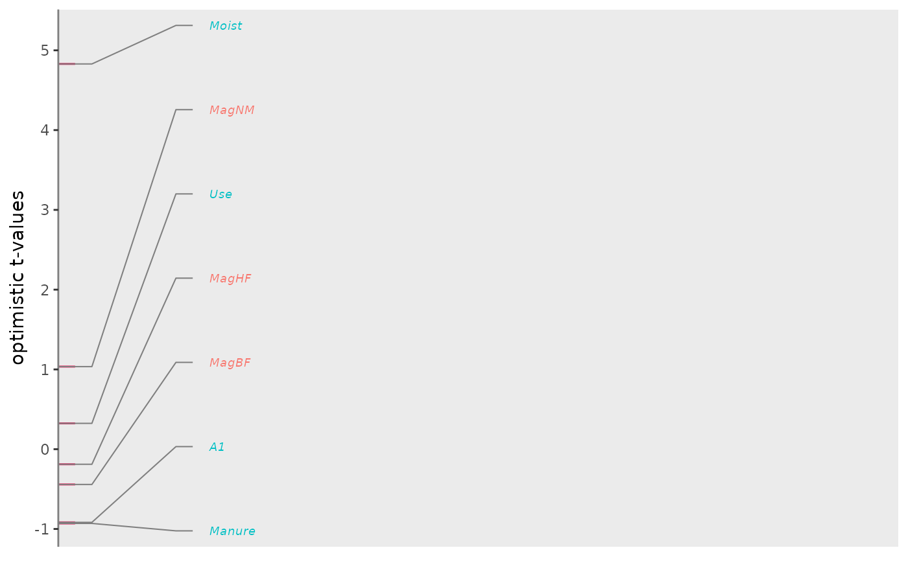

Vertical ggplot2 line plot of ordination scores
Source:R/plot_species_scores_bk.R
plot_species_scores_bk.Rdplot_species_scores_bk creates a vertical line plot of ordination
scores with selection criterion for which scores to plot with names.
Usage
plot_species_scores_bk(
species_scores,
ylab = "scores",
threshold = 7,
y_lab_interval = 0.5,
speciesname = NULL,
scoresname = "RDA1",
selectname = "Fratio1",
speciesgroup = NULL,
expand = 0.2,
verbose = TRUE
)Arguments
- species_scores
a species-by-scores matrix, a data frame with row names (species names) or a tibble with variable with name
speciesnamecontaining species names and a column or variable with namescoresnamecontaining the scores (default:"RDA1"), e.g. species scores from libraryvegan.- ylab
y-axis label. Default: $b_k$.
- threshold
species with criterion (specified by
selectname) higher than thethresholdare displayed. Default: 7 (which is the threshold F-ratio for testing a single regression coefficient atp = 0.01with60df for the error in a multiple regression of each single species onto the condition and the ordination axis). Ifselectnameis not inspecies_scores, thethresholdis divided by14, so that the default is 0.5.- y_lab_interval
interval of the y-axis ticks. A tick at no effect (0) is always included; default: 0.5.
- speciesname
name of the variable containing the species names (default
NULLuses row names).- scoresname
name of the column or variable containing the species scores to be plotted (default
"RDA1").- selectname
name of the column or variable containing the criterion for the selection of species to be displayed. Default:
"Fratio1"; ifselectnameis not found inspecies_scores, set toscoresname.- speciesgroup
name of the factor, the levels of which receive different colors in the vertical plot.
- expand
amount of extension of the line plot (default 0.2).
- verbose
logical for printing the number of species with names out of the total number (default:
TRUE).
Details
The absolute value of the criterion values is taken before selection, so
that also the species scores of the ordination can serve as a criterion
(e.g. selectname = "RDA1"). The function has been copied from
the PRC package at https://github.com/CajoterBraak/PRC.
The function is used in plot.dcca.
Examples
data("dune_trait_env")
# rownames are carried forward in results
rownames(dune_trait_env$comm) <- dune_trait_env$comm$Sites
mod <- dc_CA(formulaEnv = ~A1 + Moist + Mag + Use + Manure,
formulaTraits = ~ SLA + Height + LDMC + Seedmass + Lifespan,
response = dune_trait_env$comm[, -1], # must delete "Sites"
dataEnv = dune_trait_env$envir,
dataTraits = dune_trait_env$traits,
verbose = FALSE)
env_scores <- scores(mod, display = "tval")
env_scores <- data.frame(env_scores)
env_scores$group <- c("quantitative", "category")[c(1, 1, 2, 2, 2, 1, 1)]
plot_species_scores_bk(
species_scores = env_scores,
ylab = "optimistic t-values", threshold = 0, y_lab_interval = 1,
scoresname = "dcCA1", speciesgroup = "group", verbose = FALSE
)
